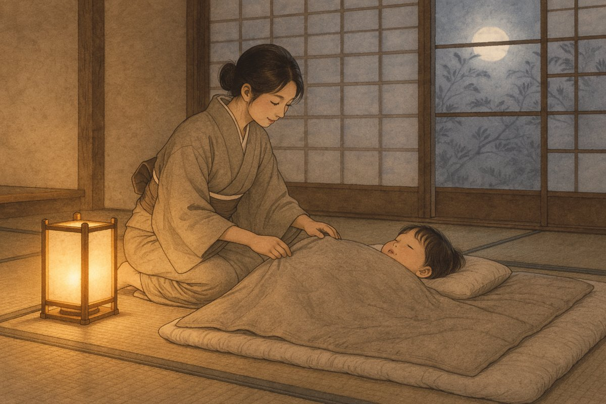

第18回毎自作是念（まいじさぜねん）― 仏さまの、いつもの願い
配信日
🔊 読み上げで聴く
出典『妙法蓮華経』如来寿量品第十六／日蓮聖人『諫暁八幡抄』

法華経の如来寿量品（にょらいじゅりょうほん）第十六は、お釈迦さまがはるか久遠（くおん）の昔から仏であり、いまも変わらずわたしたちを導いておられることを明かされた品です。その後半の偈文「自我偈（じがげ）」は、次の一句で結ばれています。
「毎自作是念 以何令衆生 得入無上道 速成就仏身」（毎に自ら是の念を作す。何を以てか衆生をして、無上道に入り、速かに仏身を成就することを得せしめんと） 出典 『妙法蓮華経』如来寿量品第十六
「毎に（つねに）」とは、ときどきではなく、いつも、ということです。わたしたちが忙しさにまぎれて仏さまを忘れている日も、仏さまのほうは一日も休まず、「どうしたらこの人を仏の道に入らせ、早く仏にさせてあげられるだろうか」と念じ続けておられます。そう思うと、心の底に温かい灯がともるようです。
日蓮聖人は、ご自身のご一生の願いを、こう記されています。
「只妙法蓮華経の七字五字を日本国の一切衆生の口に入れんとはげむ計りなり。此即ち母の赤子の口に乳を入れんとはげむ慈悲なり」 出典 日蓮聖人『諫暁八幡抄』
夜中に何度も目をさまして、わが子にお乳をふくませる母は、見返りを求めません。ただ「この子が育ってほしい」という、その一心です。お題目をお唱えするのは、その願いをありがたく口にいただくことなのでしょう。そして、わたしたちも、だれかのためにそっと念じることができます。